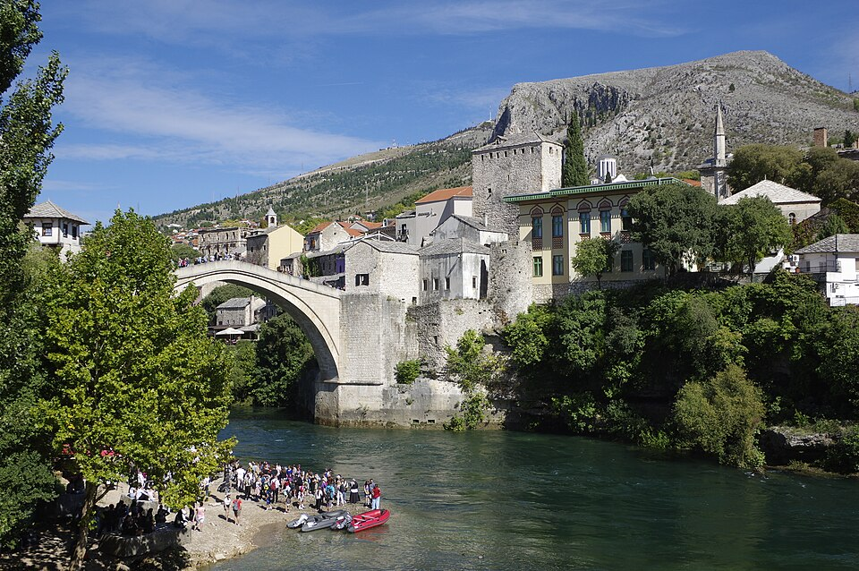
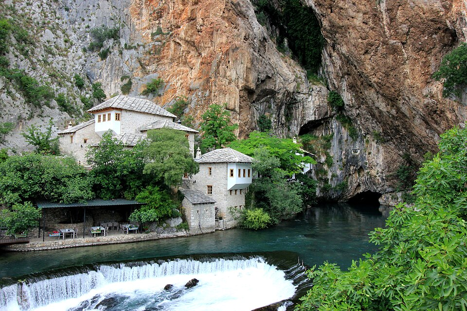
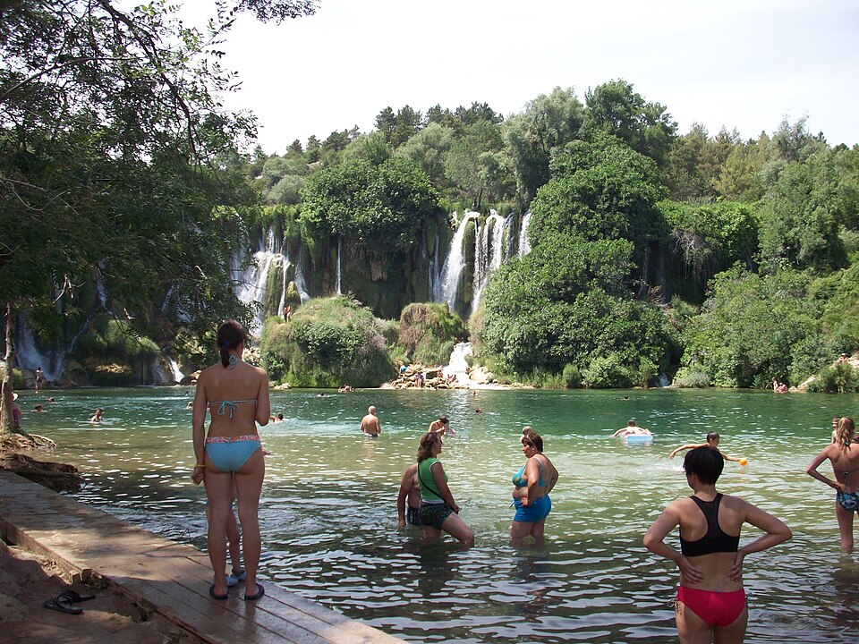
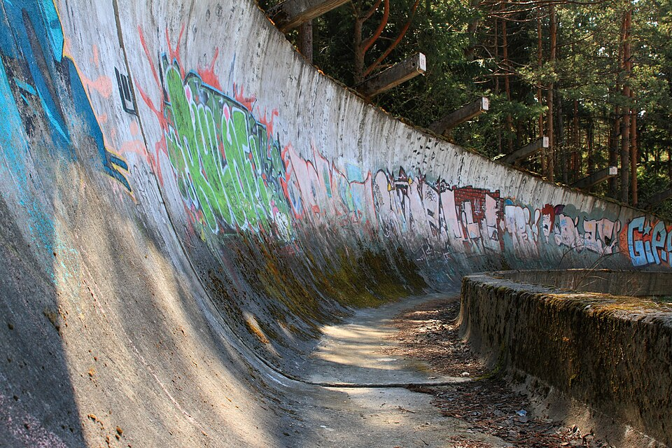

Bosnia and Herzegovina보스니아 헤르체고비나 Bosna i Hercegovina / Босна и Херцеговина
오스만과 합스부르크의 유산, 강과 산이 어우러진 나라
- Capital
- 사라예보 (Sarajevo)
- Language
- 보스니아어·크로아티아어·세르비아어
- Currency
- 태환 마르크 (BAM)

모스타르 스타리 모스트Stari Most, Mostar
블라가이 테케(부나강 수원)Blagaj Tekke, Buna spring
크라비차 폭포Kravica Waterfall
트레베비치 1984 올림픽 봅슬레이 트랙Trebević 1984 Olympic bobsleigh trackExplore Bosnia and Herzegovina
보스니아 헤르체고비나 더 알아보기
디나르 알프스와 네레트바·드리나 강, 오스만 제국의 도시유산과 합스부르크 시기 건축이 한 공간에 공존한다. 사라예보의 바슈차르시야부터 모스타르의 재건된 옛 다리까지, 20세기 전쟁의 기억과 오늘날의 다층적 문화가 함께 나타난다. 산업은 금속·자동차 부품·목재·에너지·관광·ICT로 구성되며, 복잡한 행정구조를 이해하는 것이 경제를 해석하는 출발점이다.

Latest updates
보스니아 헤르체고비나 최근 뉴스
-
보스니아 새 대통령단 취임…스릅스카공화국은 미니치 대통령 체제
유럽웨스턴발칸과 N1에 따르면 보스니아 헤르체고비나 대통령단이 17일 공식 취임했고 임기는 2030년까지입니다. N1은 안정과 개혁을 촉구하는 목소리 속에 사라예보에서 취임했다고 전했습니다.
-
보스니아: 선관위 스캐너 자료 비공개에 TI 소송 예고, 전쟁범죄 10년형 선고…세르비아 안보회의 16일 개막
N1에 따르면 보스니아 선관위는 스캐너와 지문인식기 자료 공개를 거부했고, 국제투명성기구 BiH가 법적 대응을 예고했습니다.
-
보스니아 헤르체고비나: 반마피아 작전 15명 체포, 전쟁범죄 3명 유죄, 중앙은행 성장률 전망 상향
N1에 따르면 전국 반마피아 작전으로 15명이 체포되고 대규모 마약이 압수됐습니다(11일).